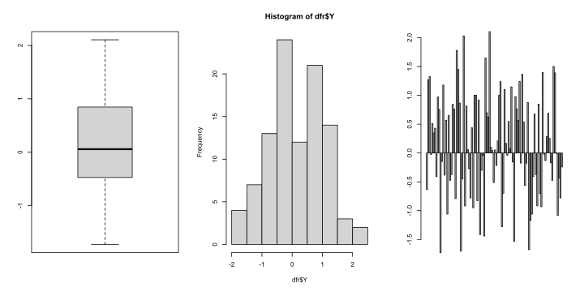
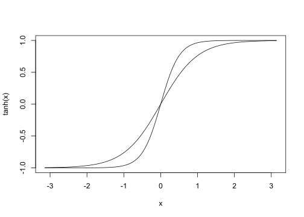
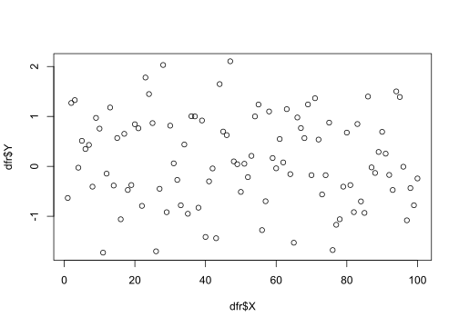
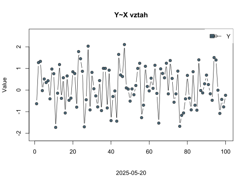
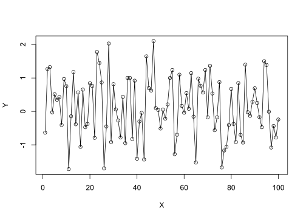
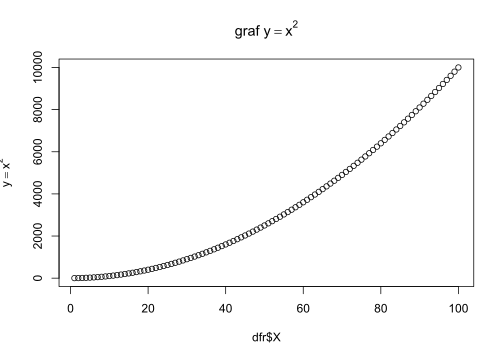
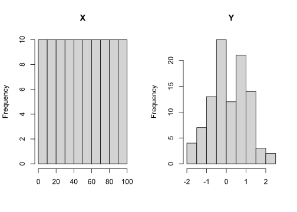

Kód
dfr <- data.frame(
X = 1:100,
Y = rnorm(100)
)- 1
- K vytvoření proměnné \(Y\) použijeme generování čísel z náhodného rozdělení s parametry \(\mu = 0\) a \(\sigma = 1\); více v Kapitola 7
V R dnes existují dva rúzné systémy pro tvorbu diagramů. První je obsažen v balíčku base a druhý staví na funkcionalitě obsažené v grid. V tomto kurzu budeme pracovat s base.
Opět připravíme datovou sadu, tentokrát umístíme do data.frame jménem dfr.
dfr <- data.frame(
X = 1:100,
Y = rnorm(100)
)demo(graphics) a projeďte až na konec ukázky. Potom vyčistěte panely Environment, Plots a Console.?parcurve()Curve je funkce, která se uplatní při tvorbě symbolických grafů matematických funkcí, kdy není třeba parametrizovat argument x.
curve(expr = tanh(x),
from = -pi,
to = pi)
plot()plot(x, y, ...) je základní S3 generická funkce, jejíž metody umožňují použití na široké množství objektů. Začneme s použitím na vektor z datasetu dfr.
plot(dfr$Y)
plot(x = dfr$X,
y = dfr$Y,
type = "b",
col = "gray10",
pch = 21,
bg = "#4a6777",
ylim = c(-abs(1.25 * min(dfr$Y)),
1.25 * max(dfr$Y)),
xlab = "",
ylab = "Value",
main = "Y~X vztah",
sub = Sys.Date())
legend(x = "topright",
fill = "#4a6777",
pch = 21,
legend = c("Y"),
box.col = NA,
lty = 1,
col = "gray10")"b" označuje body protnuté spojnicí.

with(data = dfr,
expr = {
plot(x = X, y = Y)
lines(x = X, y = Y)
}
) with() umožňuje zavolání funkce uvedené v arugmentu expr na proměnných v data.frame. Odpadá opakované psaní prefixu datové sady (zde dfr$___)
expr může obsahovat i blok kódu {...}

plot.new() xlab = "Ep/P", ylab = "P/Er", xlim v rozsahu \(\phi\) a ylim od \(0\) do \(1,2\). Výsledek by měl vypadat následovně:

S polárními souřadnicemi se setkáváme poměrně často.
Polární souřadnice \[ \begin{array}{rl} x =& \sqrt{t}\cdot\cos(2\pi t)\\ y =& \sqrt{t}\cdot\sin(2\pi t) \end{array} \]
x <- sqrtVýpis všech předdefinovaných barev1 lze získat příkazem colors().
colors()[1:10] [1] "white" "aliceblue" "antiquewhite" "antiquewhite1"
[5] "antiquewhite2" "antiquewhite3" "antiquewhite4" "aquamarine"
[9] "aquamarine1" "aquamarine2" RColorBrewerSoučástí základní sady je balíček RColorBrewer
RColorBrewer::display.brewer.all()
K vytvoření palety barev
RColorBrewer::brewer.pal(100, name = "RdBu")Warning in RColorBrewer::brewer.pal(100, name = "RdBu"): n too large, allowed maximum for palette RdBu is 11
Returning the palette you asked for with that many colors [1] "#67001F" "#B2182B" "#D6604D" "#F4A582" "#FDDBC7" "#F7F7F7" "#D1E5F0"
[8] "#92C5DE" "#4393C3" "#2166AC" "#053061"rbind(
rainbow = rainbow(10),
heat.colors = heat.colors(10),
cm.colors = cm.colors(10),
blues9
)Warning in rbind(rainbow = rainbow(10), heat.colors = heat.colors(10),
cm.colors = cm.colors(10), : number of columns of result is not a multiple of
vector length (arg 4) [,1] [,2] [,3] [,4] [,5] [,6]
rainbow "#FF0000" "#FF9900" "#CCFF00" "#33FF00" "#00FF66" "#00FFFF"
heat.colors "#FF0000" "#FF2400" "#FF4900" "#FF6D00" "#FF9200" "#FFB600"
cm.colors "#80FFFF" "#99FFFF" "#B3FFFF" "#CCFFFF" "#E6FFFF" "#FFE6FF"
blues9 "#F7FBFF" "#DEEBF7" "#C6DBEF" "#9ECAE1" "#6BAED6" "#4292C6"
[,7] [,8] [,9] [,10]
rainbow "#0066FF" "#3300FF" "#CC00FF" "#FF0099"
heat.colors "#FFDB00" "#FFFF00" "#FFFF40" "#FFFFBF"
cm.colors "#FFCCFF" "#FFB3FF" "#FF99FF" "#FF80FF"
blues9 "#2171B5" "#08519C" "#08306B" "#F7FBFF"palette.pals() [1] "R3" "R4" "ggplot2" "Okabe-Ito"
[5] "Accent" "Dark 2" "Paired" "Pastel 1"
[9] "Pastel 2" "Set 1" "Set 2" "Set 3"
[13] "Tableau 10" "Classic Tableau" "Polychrome 36" "Alphabet" palette.colors(palette = "Okabe-Ito")[1] "#000000" "#E69F00" "#56B4E9" "#009E73" "#F0E442" "#0072B2" "#D55E00"
[8] "#CC79A7" "#999999"fcol <- colorRampPalette(colors = c("black", "white"))
palette("Classic Tableau")Správná volba barev v grafech odborných publikací je velmi důležitá. V ideálním případě by grafické škály měly být stejné čitelné jak pro lidi s poruchou barevného spektra, tak v černobílem tisku. Obojí je řešeno například pomocí balíčku scico Pedersen a Crameri (2021). Ve zkratce je problematika vysvětlena například ve vignette balíčku viridis.
?plotmath demo(plotmath)
Jednoduchý pravidelný layout můžeme vytvořit změnou parametrů okna grafického výstupu pomocí funkce par()
par()par(mfrow = c(1, 2))
hist(dfr$X, main = "X", xlab = "")
hist(dfr$Y, main = "Y", xlab = "")
layout()par(cex = 2)
layout.show(
layout(
mat = matrix(
data = c(2, 2, 0,
1, 1, 3,
1, 1, 3),
nrow = 3,
ncol = 3,
byrow = TRUE))
)
Nyní vynecháme layout.show(), zavolámem jen layout() a postupně přiřadíme grafy k jednotlivým polím.
layout(
mat = matrix(
data = c(2, 2, 0,
1, 1, 3,
1, 1, 3),
nrow = 3,
ncol = 3,
byrow = TRUE))Grafy je možné uložit externě, at už prostřednictvím dialogu v Plots > Export, nebo přímo ve skriptu. Formát lze volit mezi rastrovými *.png, *.jpeg, *.tiff, *.bmp, či vektorovými *.eps, *.svg, *.pdf.
png("./budyko_kompozit.png",
width = 8,
height = 6,
units = "px",
res = 300)
...
dev.off()pdf(). Využijte naápovědy.t <- seq(from = 2010, to = 2020, length = 200)) a potom do stejného grafu vyneste \(\sin(2\pi(t - 1))\) a \(\cos^2(2\pi t)\).load("./data/data4chapter5and6.rda")
meanEPmon <- -1.55 + 0.96 * (8.128 + 0.457*meanTmon)*meanSImon
meanEPmon[meanEPmon < 0] <- 0
PET <- 365.25 * apply(meanEPmon, 1, mean, na.rm = TRUE)
# PETovP <- Předdefinovaných barev je celkem 657.↩︎